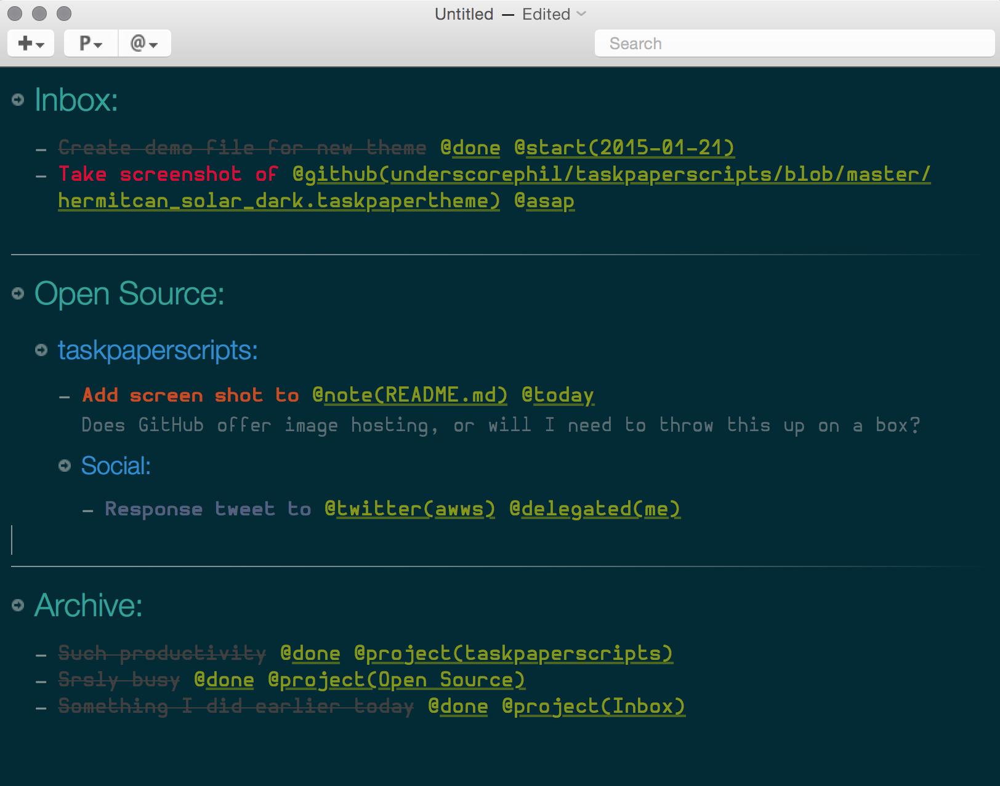

A collection of scripts used in my TaskPaper workflow.
Log completed TaskPaper tasks to Day One. The heavy lifting done by Brett Terpstra in this blog.
This fork adds any notes attached to a task to the Day One entry and changes the integration with Day One from the Day One CLI to jrnl
Switching from the Day One CLI to jrnl allowed for more flexible use of Day One’s tags.
jrnl is used in place of the Day One CLI because of its native support for tags in the @ format already used by TaskPaper
~/Library/Scripts/Applications/TaskPaperCONFIG and make a decision to keep the defaults or change these values.Solarized Dark TaskPaper theme based on tundramonkey’s theme HelvetiCan using the Hermit fontset
~/Library/Application Support/TaskPaper/Themes